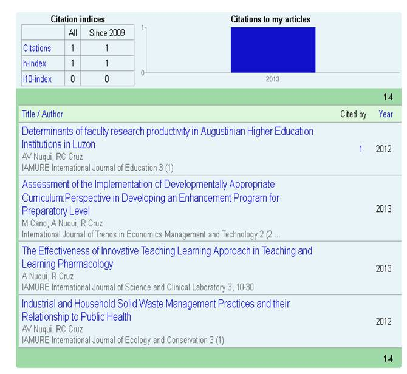

Dr. Alvin V. Nuqui

Curriculum Vitae
Director, Research and Development Office & Research Coordinator
La Consolacion University Philippines
Employment History
La Consolacion University Philippines
Director, Research and Development Office, June 2011-present
Research Coordinator, June 2013-present
Assistant Dean, Graduate School, June 2011-2012
Faculty Researcher, Research and Development Office, from 2009-2011
College Faculty, College of Allied Medical Sciences from June 2005 – 2009
The School for Chosen Children
School Principal, April 2002 – April 2005
Chosen Children Village Foundation Inc.
Physical Therapy Clinical Supervisor, February 2002–April 2005
Educational Attainment
La Consolacion University Philippines (formerly URC)
Doctor of Philosophy in Educational Leadership and Management
Major in Management Research
University of Regina Carmeli
Diploma in Educational Leadership, 2010
University of Regina Carmeli
Master of Arts in Behavioral Science, Major in Psychology, 2008
Pamantasan ng Lungsod ng Maynila
Certificate in Professional Education, 2003
International Research Publications and Citations

Completed Funded Research (as Co-Project Leader)
Research Project/ Title |
Duration |
Funding Agency |
Patient and Health System Factors as Determinants to Delay in Tuberculosis Detection and Treatment in Region III |
2010-2011 |
CLHRDC |
Evaluation of the Maternal Health Care Services of the Rural Health Units in Region III |
2011-2012 |
CHED-ZRC3 |
Organized International Conferences
Conference |
Theme |
Venue |
Date |
2nd International Conference on Interdisciplinary Research Innovations (ICIRI) |
Promoting Interdisciplinary Research in Higher Education: Pushing the Frontiers of Knowledge beyond Borders |
La Consolacion University Philippines |
December 3-6, 2013 |
1st International Conference on Interdisciplinary Research Innovations (ICIRI) |
Promoting Interdisciplinary Research in Education: Echoing Research Milestones of Faculty and Practitioners |
La Consolacion University Philippines |
December 4-6, 2012 |
Professional Affiliations & Certifications
- Member, Asian Association of Scholarly Peer Reviewers (AASPP)
- Member, International Association of Multidisciplinary Research (IAMURE)
- Member, Research Utilization, Information and Communication Committee, CLHRDC
- Member, Philippine Physical Therapy Association (PPTA)
- Member, Pambansang Samahan ng Sikolohiyang Pilipino (PSSP)
- Member, Philippine Association for Graduate Education (PAGE)
- Member, National Organizations for Professional Teachers, Inc. (NOPTI)
- Licensed Physical Therapist – PRC (August 2001)
- Licensed Teacher – PRC (October 2003)
- Certified TESDA Caregiver Assessor
- National Certification II for Caregiver
Awards and Recognitions
Date |
Awards and Recognitions Received |
Name of the Institution/ Organization |
February 13-14, 2014 |
Outstanding Filipino Researcher Award |
International Conference on Climate Change, Ecology, and Conservation |
World Publication Award |
||
Best in Oral Presentation |
||
October 30-November 1, 2013 |
Certificate of Participation |
9th QS-Asia Pacific Professional Leaders in Education Conference and Exhibition |
May 29, 2012 |
Best Dressed Researcher |
Asian Conference in Education, Kuala Lumpur, Malaysia |
Best in Power Point Presentation |
||
Certificate of Recognition |
||
April 28, 2012 |
Certificate of Recognition |
Regional Seminar on Research and Paper Presentation, University of the Assumption, San Fernando, Pampanga |
October 21-22, 2011 |
International Quality Award – Judge in Oral Research Presentation |
2nd International Conference on Multidisciplinary Research, East View Hotel, Bacolod City, Philippines |
October 21-22, 2011 |
International Quality Award –Oral Research Presentation |
2nd International Conference on Multidisciplinary Research, East View Hotel, Bacolod City, Philippines |
October 21-22, 2011 |
International Quality Award –Oral Research Presentation |
2nd International Conference on Multidisciplinary Research, East View Hotel, Bacolod City, Philippines |
October 21-22, 2011 |
International Quality Award – Best Dressed Researcher |
2nd International Conference on Multidisciplinary Research, East View Hotel, Bacolod City, Philippines |
January 31, 2011 |
Certificate of Appreciation – Writer of Creative Works/Developmental Study during 2010-2011 |
University of Regina Carmeli Malolos, Bulacan |
January 31, 2011 |
Certificate of Recognition – Developing Research Proposals with external funding |
University of Regina Carmeli Malolos, Bulacan |
January 31, 2011 |
Certificate of Recognition – Paper Presentor in a local Conference |
University of Regina Carmeli Malolos, Bulacan |
January 31, 2011 |
Certificate of Recognition – Paper Presentor in an International Conference |
University of Regina Carmeli Malolos, Bulacan |
January 31, 2011 |
Certificate of Recognition – Conducting relevant researches in the University |
University of Regina Carmeli Malolos, Bulacan |
January 31, 2011 |
Certificate of Appreciation – Writer of Creative Works/Developmental Study during 2010-2011 |
University of Regina Carmeli Malolos, Bulacan |
August 27, 2010 |
Certificate of Appreciation – Presentor, Research Colloquium on Environmental Stewardship |
University of Regina Carmeli Malolos, Bulacan |
January 30, 2010 |
Certificate of Merit |
University of Regina Carmeli Malolos, Bulacan |
January 30, 2010 |
Certificate of Appreciation |
University of Regina Carmeli Malolos, Bulacan |
January 30, 2008 |
Certificate of Merit |
University of Regina Carmeli Malolos, Bulacan |
January 30, 2008 |
Certificate of Merit – Nominated as Outstanding Faculty, Full time Faculty, College Level Category |
University of Regina Carmeli Malolos, Bulacan |
List of Speakership
Date |
Theme |
Place |
May 23, 2012 |
“ Research Writing for International Publication” |
AVR, La Consolacion University Philippines |
July 24, 2011 |
“ Write shop on the Formulation and Research Conceptualization” |
AVR, La Consolacion University Philippines |
February 27, 2010 |
Resource Person, EDUC 207 Class (Educational Planning) |
San Isidro Labrador Catholic School – Quezon City |
September 19, 2009 |
“ Touching Life; a Commitment for Life” |
5th Commencement Exercise, Phoenix Foundation Academy – Malolos |
December 21, 2008 |
“Phoenix Foundation Academy Empowers its Graduates with Skills, Knowledge and Attitude |
4th Commencement Exercise, Phoenix Foundation Academy – Malolos |
Trainings and Seminars
Date |
Theme |
Place |
August 7, 2013 |
National Peer Review, Editing and Train the Trainers (Part 2) Workshop |
Plaza Del Norte Hotel and Convention Center, Laoag City |
July 27, 2012 |
2nd National Medical Writing Workshop and Peer Review Workshop |
Marco Polo Hotel, Davao City |
May 22, 2012 |
Outcome-Based Education: Principles, Strategies and Modalities |
AVR,La Consolacion University Philippines- Bulacan |
May 24, 2012 |
The LCUP Enhanced K+12 Basic Education Program |
AVR,La Consolacion University Philippines- Bulacan |
May 24, 2012 |
Mc Graw-Hill Educations K+12 Curriculum: Integrating Understanding by Design with Different Instruction |
AVR,La Consolacion University Philippines- Bulacan |
May 25, 2012 |
Guidelines in the Implementation of ISO 9001:2008 in School Setting |
AVR,La Consolacion University Philippines- Bulacan |
May 25, 2012 |
QMS/QAS for Maintaining Quality in Higher Education Institutions |
AVR,La Consolacion University Philippines- Bulacan |
April 28, 2012 |
Dissemination and Utilization of Research Outputs |
University of the Assumption City of San Fernando |
March 24, 2012 |
Conceptualizing Thesis/Dissertation Problems for International Publication |
Angeles University Foundation, Angeles City Pampanga |
February 15, 2012 |
Data Base of Theses and Dissertations in Education 2005-2010 (Phase 1) Training on the Online System |
Dev Center, OLOPH Building, Quezon City |
November 4, 2011 |
Conference of Graduate School Deans in the NCR, Regions III and IV-A on “ Databases of Theses and Dissertations in the Field of Educations 2005-2010 (Phase 1) |
Trinity University of Asia, Quezon City |
July 15, 2011 |
Reengineering of Research Planning Office (RPO) of Schools |
Bayview Park Hotel, Roxas Blvd., Manila |
April 13, 2011 |
CLHRDC – RUIC’s Health Research Forum and Poster Exhibits |
Holy Angel University, City of Angels, Pampanga |
February 22-24, 2011 |
Dissemination and Utilization of Research Outputs |
University of Regina Carmeli Malolos, Bulacan |
January 15, 2011 |
The Use of Statistical Softwares in Research |
University of Regina Carmeli Malolos, Bulacan |
June 12, 2010 |
Mentoring Research Writers |
University of Regina Carmeli Malolos, Bulacan |
April 12-17, 2010 |
Introduction to Integrative Medicine |
La Consolacion College Manila |
February 14, 2010 |
Current Trends in Pediatric Orthotics and Prosthetics: Global Meets Local Practices |
Orthotic-Prosthetic Lab, UP PGH |
January 27, 2010 |
Enhancing the Research Productivity of Graduate Schools |
Barcie International Center, Universityof Regina Carmeli, Malolos, Bulacan |
November 19-20, 2009 |
Workshop on the Preparation of 2010 GIA Research Proposal |
Central Luzon State University Muñoz, Philippines |
October 22, 2009 |
SPSS Discovery Convention 2009 |
Visayas Ballroom, Sofitel Philippine Plaza Manila |
May 20-22, 2009 |
Linangan 2009: Seminar Workshop sa Pagtuturo ng Sikolohiyang Pilipino |
Unibersidad ng Pilipinas, Diliman, Quezon City |
April 25, 2009 |
Seminar on Insturmentation in Research |
Pampanga Agricultural College, Magalang Pampanga |
February 9, 2009 |
PQRST of ECG: Learning the Electrical Energy of the Fragile Heart |
AVR, University of Regina Carmeli, Malolos, Blacan |
October 25, 2008 |
Test Construction and Measurement |
AVR, University of Regina Carmeli |
August 9, 2008 |
Seminar on Qualitative Research |
Holy Angel University, Angeles City |
May 27-29, 2008 |
Transformative Education Seminar Workshop |
Barcie International Center, Malolos, Bulacan |
April 19, 2008 |
Seminar on Challenges, Issues and Concerns in the Graduate Education and Regional Student’s Research Congress |
University of the Assumption, San Fernando, Pampanga |
Community Extension Involvement
Date |
Activity |
March 20, 2010 |
Moderator, Bantay Kalikasan Organization |
April 13, 2010 |
Tree Planting of Mahogany Trees |
April 18, 2009 |
“Operation Tule” a Mother Francisca Extension Service Program |
March 27, 2009 |
Various Activities from the College of Allied Medical Sciences |
February 13, 2009 |
Philippine Homestay experience of Cultural Exchange Student from Daegu Health College, Korea |
December 24, 2008 |
Christmas Gift Giving Project |
November 15, 2008 |
Medical-Dental Mission |
February 22, 2008 |
“ Bantay Presyon 2K8: Kamulatan Upang Agapan ang Alta Presyon” |
February 18, 2008 |
Environmental Cleanliness and Medical Mission |
February 15, 2008 |
“ Ang Ganda ng Barangay Ko!” Kalinisan Tungo sa Malusog na Pamayanan |
January 31, 2008 |
Foster Parent – Cultural Exchange Student from Daegu Health College Korea |